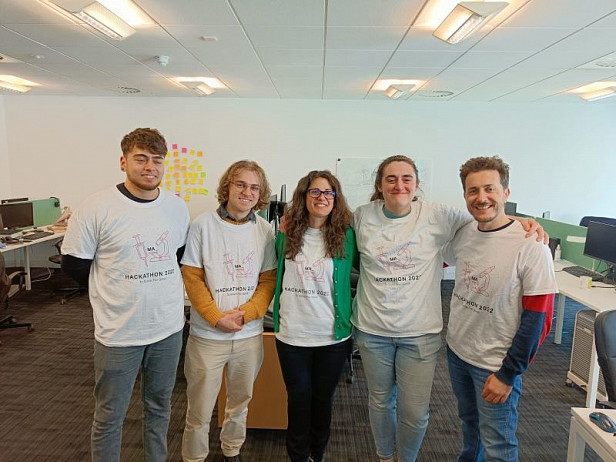

Lilith has been part of the Methods group for over 5 years, starting out in administration and progressing to Data Scientist. She shares her journey on navigating the transition.
Throughout my life, I’ve never really had a particular ‘passion’ as such. Sure, I’ve had things I was interested in, but nothing to drive me towards a specific career. After graduating university, I floundered for a bit, wondering what to do with myself. I had assumed I would go into academia, but after my 3rd year dissertation project, I realised it was an environment I wasn’t going to enjoy. After some part time jobs, I was hired by Methods Analytics in an administrative role in 2016.
In my role, I got some exposure to the work the analytics team were doing, and became fascinated. The impactful work being done with the NHS, using data to find insights and drive real change, was inspiring. I had always been intrigued about learning to code, but thought it was far too difficult to learn. My administrative role became unchallenging for me, so I took the plunge and taught myself python and SQL, and raised the question of whether I could transition to the analytics team. Throughout my time at Methods Analytics, there has always been a culture of curiosity and improvement, and my line manager fully supported this move. Fast forward to today, I’ve developed my passion for social impact. This shift that has been nurtured by the company, has propelled my career to this point, and I was recently part of the winning team in our 2022 Hackathon.

As well as humouring my career change, Methods Analytics have supported and continue to support me by allowing ample time for training, and providing mentoring from more experienced colleagues. As time went on, the analytics team morphed into the data science team, and we have continued to grow and develop in new and interesting areas. One of the things I appreciate most about the team is the understanding that everyone has different strengths, weaknesses, and backgrounds, and this fosters a really friendly and positive environment for learning and progression. The data science team work brilliantly together, complementing one another’s strength and improving on weaker areas. I feel like my job role today fits perfectly with the skills and passion I have discovered over the course of my career at Methods Analytics.
Today, I’m glad I didn’t allow doubt to discourage me from learning how to code. My advice for those that are in a similar position to where I was, is to be always willing to try new things, because even the ones that fail can open opportunities. My takeaway from this experience is that there is satisfaction and fulfilment to be found in a wide range of different jobs and roles, but you won’t know if you’re capable of something until you try.
Lilith Barca, Data Scientist


 Blogs, Employee Stories
Unexpected benefits of running a hackathon
July 5th 2022
Blogs, Employee Stories
Unexpected benefits of running a hackathon
July 5th 2022
Lead Data Scientist, Felicia Ziparo, shares her learnings from the recent Methods Analytics Hackathon.
Read More Employee Stories
Beyond the flag: Giving support to those in need
June 15th 2022
Employee Stories
Beyond the flag: Giving support to those in need
June 15th 2022
LGBTQ+ Charities and Support Groups by Evelyn Staniforth
Read More Employee Stories
Launching My Career from a Placement Year
May 31st 2022
Employee Stories
Launching My Career from a Placement Year
May 31st 2022
James Holland shares how embracing diffrent opportunities has helped him contribute to society and develop a great career.
Read More